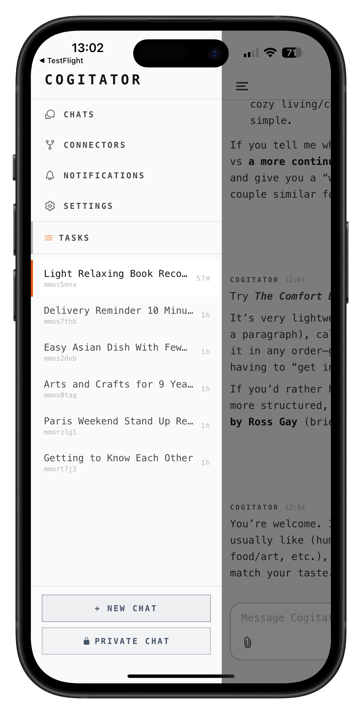

Same agent, everywhere
A native macOS app for your desktop. An iOS app for when you're away from your computer. Or run it in Docker on your own server. The same agent, the same memory, whichever device you pick up.


A native macOS app for your desktop. An iOS app for when you're away from your computer. Or run it in Docker on your own server. The same agent, the same memory, whichever device you pick up.

Your AI lives on one device. Switch to your phone and you start from scratch. Switch to a server and you lose your desktop setup. There's no continuity.
On macOS, Cogitator is a proper application with its own window, system notifications, and automatic updates. Not a web page pretending to be an app. It sits in your dock and works like any other native program.
The iOS app connects to your running Cogitator instance. Same conversations, same memory, same tasks. Start something on your laptop, continue on your phone. The mobile app isn't a separate product; it's a window into the same agent. Now with voice mode for hands-free conversations.
Docker for a home server or VPS. Or build from source if you want. The server is a single program, one file for all your data. Put it wherever you want and access it from any browser.
Native application with auto-updates from GitHub releases. Runs in the background, launches at login if you want, and stays out of the way until you need it.
Companion app currently in beta via TestFlight. Full conversation support, memory browsing, and task management on the go.
Single container, single data volume, works on any server. Spin it up on a Raspberry Pi, a cloud VM, or a NAS in your closet.
Read the code, build from source, run it on any machine. You're never locked in. If Cogitator disappeared tomorrow, you'd still have everything.